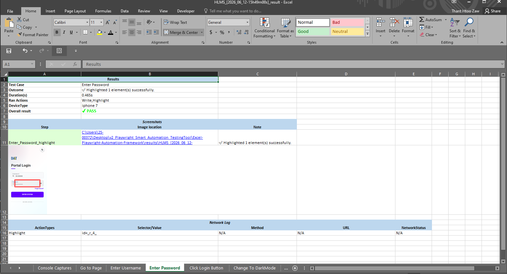

01 / Overview & Purpose
The Playwright Smart Automation TestingTool executes automated frontend scenarios
driven directly out of structured Microsoft Excel spreadsheets (.xlsx). By
migrating from legacy Selenium structures to a modern Playwright architecture, the framework
delivers faster execution speeds, robust logging, and flexible execution modes without changing core
engine code.
| Capability / Feature | Old Selenium Setup | New Playwright Smart Tool |
|---|---|---|
| Speed & Footprint | Heavy, slow execution with high driver overhead. | ⚡ Fast, lightweight asynchronous architecture. |
| Execution Modes | Rigid configuration, difficult headless switching. | Fully runnable in both Headed and Headless modes. |
| Error Handling | Vague stack traces, painful troubleshooting. | Clear, human-readable error logs generated automatically. |
| Telemetry Logs | Limited to basic application exceptions. | Deep internal Console logs and Network log capture. |
| Test Specifications | Hardcoded scripts requiring code changes. | Excel-based matrix (easily changeable to suit any custom spec). |
| Reporting Layer | Standard console text or plain text output logs. | Premium Custom Reports with embedded screen captures and timelines. |
02 / Technical Stack Configuration
The framework leverages portable, cross-platform components that remove the need for system-wide configuration or complex environment setups. The standalone architecture wraps all runtime dependencies natively:
| Layer | Technology / Engine | Core Purpose & Practical Benefit |
|---|---|---|
| Test Runner | Batch Script (.bat) | Provides a lightweight, user-friendly "Click and Run" entry point for running automation pipelines instantly. |
| Language | JavaScript (Node.js) | Ensures rapid, asynchronous scenario processing and event-driven data execution tracking. |
| Report Layer | Custom Reporter Engine | Compiles unified validation data across distinct channels simultaneously: Excel reports, HTML dashboards, and userfriendly readable log streams and errors. |
| Test Data Store | Excel-Based Format (.xlsx) | Decouples core programmatic drivers from specification sets, maintaining readable step schemas inside simple sheets. |
| Browser Drivers | Edge, Chrome, Firefox, WebKit | Eliminates manual driver version sync issues. Playwright handles multi-browser container configurations internally. |
03 / Directory Architecture
📂 EXCEL-PLAYWRIGHT-AUTOMATION-FRAMEWORK/ ├── 📄 dockerfile ├── 📄 ProgressWindow.ps1 // If Headed Mode, ProgressWindow will appear ├── 📄 runner.bat // Main Runner batch file. Click and Run ├── 📂 helpers/ // Reusable components │ ├── 📄 consoleLoading.js │ ├── 📄 generateAllure.js │ ├── 📄 generating_html-report.js │ ├── 📄 getImageSize.js │ ├── 📄 getTimestamp_YYYYMMDD_HHmmss.js │ ├── 📄 highlight.js │ ├── 📄 playwright_deviceProfile.js │ ├── 📄 readableError.js │ ├── 📄 runLog.js │ ├── 📄 screenResolusion.js │ └── 📄 wait.js ├── 📂 Installation_Setups/ // Portable Setups │ ├── 📄 corepack │ ├── 📄 corepack.cmd │ ├── 📄 install_tools.bat │ ├── 📄 node.exe │ ├── 📄 nodevars.bat │ ├── 📄 npm │ ├── 📄 npm.cmd │ ├── 📄 npm.ps1 │ ├── 📄 npx │ ├── 📄 npx.cmd │ ├── 📄 npx.ps1 │ └── 📂 node_modules/ // Playwright + Libraries ├── 📂 results/ // Specific Result files │ └── 📂 HLMS_[2026_06_03-10h39m16s]_results/ │ ├── 📄 HLMS_[2026_06_03-10h39m16s]_result.html │ ├── 📄 HLMS_[2026_06_03-10h39m16s]_result.xlsx │ ├── 📄 HLMS_[2026_06_03-10h39m16s]_runLog.txt │ ├── 📂 downloads/ │ └── 📂 screenshots/ │ ├── 📄 Change_To_DarkMode_highlight.png │ ├── 📄 Change_To_DarkMode_page_url_stayed_same.png │ ├── 📄 Click_Login_Button_highlight.png │ ├── 📄 Click_Login_Button_page_url_matched.png │ ├── 📄 Enter_Password_highlight.png │ ├── 📄 Enter_Username_highlight.png │ ├── 📄 Go_to_Page_screenshot.png │ ├── 📄 Highlight_ProfileMenu_highlight.png │ └── 📄 Wait_For_Full_Document_screenshot.png ├── 📂 runner/ // Main Execution file │ └── 📄 runFromExcel.js └── 📂 tests/ // Excel-based Test specs ├── 📄 DisasterManagementTesting - Copy.xlsx ├── 📄 DisasterManagementTesting.xlsx ├── 📄 GoogleSearchTesting.xlsx ├── 📄 HLMS.xlsx └── 📄 Login_logoutTesting.xlsx
04 / Operational Lifecycle Flow
[Phase 1: Initialization Pipeline] 🚀 Double-Click: runner.bat │ └──▶ 📦 JavaScript Runner Ingestion Engine Path: /runner/runFromExcel.js │ ▼ [Phase 2: Configuration & Runtime Selector Checks] 🎛️ Dynamic Profile Interceptor Options: ├── 🛡️ Execution UI Mode: │ ├── Headless Selected ──▶ 🖥️ Launch Custom Overlay (ProgressWindow.ps1) │ └── Headed Selected ───▶ 🌐 Instantiates Native Chromium / WebKit Instance │ ├── 📂 Target Source Mapping: Supports single file specs or recursive folder sweeps │ └── Target Source: /tests/HLMS.xlsx (Example Specs) │ ├── 🌐 Target Browser Context: Chrome, Edge, Firefox, or Safari Emulators └── 📱 Device Type Lookup: Reads profile row maps to instantly override viewport/UA bounds │ ▼ [Phase 3: Core Step Matrix Execution Loop] 🔄 Parsing Matrix Loops: Extract Excel Rows Line-By-Line │ ├── 🚀 Run Step Actions (Go To,Write,Click,Highlight, etc.) │ └── 📝 Live Telemetry Monitors: ├── 🧾 Streaming Console Logs ──▶ Live Terminal Trace └── 🚨 Readable Error Handler ─▶ Translates browser stack anomalies into pure text │ ▼ [Phase 4: Artifact Compilation & Reporting Output Splits] 🏁 Execution Terminal Closure Wrap-Up │ └──▶ 💾 Target Directory Array: /results/ │ └──📂 [TestFile]_[YYYY_MM_DD-HHhmms]_results/ ├── 📂 /downloads/ // Contains downloaded blobs generated during execution ├── 📂 /screenshots/ // Asset caps captured (Named with corresponding TestCase key) ├── 📄 [TestFile]_[Timestamp]_result.html // Custom Web Dashboard ├── 📄 [TestFile]_[Timestamp]_result.xlsx // Updated Results Sheet Matrix └── 📄 [TestFile]_[Timestamp]_runLog.txt // Consolidated Trace Timeline Log
05 / Excel Row Schema Properties
The automation engine reads and interprets testing steps from Excel sheets dynamically based on the column headers and syntax validation rules defined below.
📋 1. Column Keys & Supported Action Types
The core engine maps rows using the exact columns specified in your test sheet headers:
| Key Header | Data Type | Core Application Responsibility / Valid Keywords |
|---|---|---|
| ActionType Keys | String |
Go
To
Write
Keyboard
Click
Select
SelectButton
Download
Highlight
Outline
Color
ScreenShot
Wait
Wait For
Document Loaded
|
| Expected Outcome | String | Defines the target validation check text or assertion condition state for report tracking. |
| Device Type | String | Controls target responsive execution layout width rules and agent strings. |
⚙️ 2. Selector Prefix Parsing Rules
The runner translates spreadsheet strings into native Playwright CSS/XPath locators via prefix parsing logic:
| Excel Value Prefix Syntax | Parsed Output Result | Target Matcher Context |
|---|---|---|
| text=Submit | text=Submit | Direct inner text content mapping. |
| id=username | #username | Standard CSS element ID selector conversion. |
| name=email | [name="email"] | Standard form element name attribute attribute block. |
| type=button | [type="button"] | Element element component type descriptor query. |
| class=btn-primary | .btn-primary | Standard CSS element styling class dot shorthand conversion. |
| placeholder=Enter ID | [placeholder="Enter ID"] | Maps input text components by placeholder strings directly. |
| xpath=//div[@id='app'] | //div[@id='app'] | Strips prefix string to pass XML paths down natively. |
| fullxpath=//body/div/form | xpath=//body/div/form | Converts full-length explicit trees to exact XPath selectors. |
📱 3. Device Emulation Mappings Matrix
The platform supports responsive layout simulations. Pass any of these validated profile keys in
the sheet's Device Type
column:
- desktop chrome
- desktop chrome hidpi
- desktop firefox
- desktop safari
- desktop edge
- galaxy a55
- galaxy s24
- galaxy s9+
- galaxy s8 / s5
- galaxy note 3 / 2
- galaxy tab s4
- iphone 15 pro max
- iphone 14 / 13 / 12
- iphone x / xr / se
- ipad pro (Custom CSS scale)
- ipad (gen 11 / 7 / 6)
- ipad mini
- pixel 7 / 5 / 4 / 3
- pixel 2 xl
- nexus 7 / 6p / 5x / 4
- blackberry z30 / playbook
- microsoft lumia 950
- nokia lumia 520 / n9
* Append landscape to
any mobile device name to tilt the emulation container context frame horizontally (e.g., galaxy a55 landscape).
06 / End-to-End Operational Walkthrough
A comprehensive, visual look at the test execution lifecycle, tracking data manipulation from configuration to artifact output generation.
Test Case Sheet Matrix Entry
The framework maps workflows out of a target spreadsheet schema. Rows interpret execution
instructions matching explicit step keywords (e.g., Go To, Write,
Click, Highlight) alongside dynamic responsivity changes defined
inside the Device Type column header.

Pipeline Initialization via Runner Batch
Triggering the system starts by double-clicking runner.bat in the directory
workspace root. This launches a command-line wrapper wrapper that initializes the portable
Node.js execution runtime context instantly.

UI Interception, File Mapping, & Browser Engine Configuration Selection Dialogs
The execution scripts launch structured interactive menu prompts across three sequential evaluation states:


Active Test Runner Processing with Device Viewport Emulation
The automation engine extracts individual test matrix lines, evaluates step criteria, and
applies precise cross-device styling restrictions on the fly. Viewports are dynamically
scaled to match precise mobile or desktop profile properties (e.g., matching
ipad pro 11 layout rules).

Consolidated Run Log Trace Asset Generation
A definitive text trace file (..._runLog.txt) writes to disk inside the
timestamped output directory folder array block. It indexes sequential execution steps,
active target strings, browser actions, and elapsed lifecycle time metrics.

Multi-Channel Result Compilation Output Workspace
Upon run termination, the framework creates a time-stamped directory under
/results/. This packages image assets, downloads, and multiple structured file
outputs together:

Low-Level Console Captures Log Tab Tracking
The framework isolates browser network streams and captures internal console errors, warnings, and standard info evaluations, rendering them inside a clean telemetry data tab block.

Updated Excel Results Matrix Compilation Sheet
The core runner stamps test status values directly back into a duplicate copy of your
tracking template sheet, outputting a clean sheet matrix labeled
..._result.xlsx.

Interactive HTML Report Dashboard Generation
The web reporter combines structural tracking metadata, interactive dashboard navigation tabs, step status summaries, highlighted media screenshots, and low-level API split metrics within a single file dashboard: